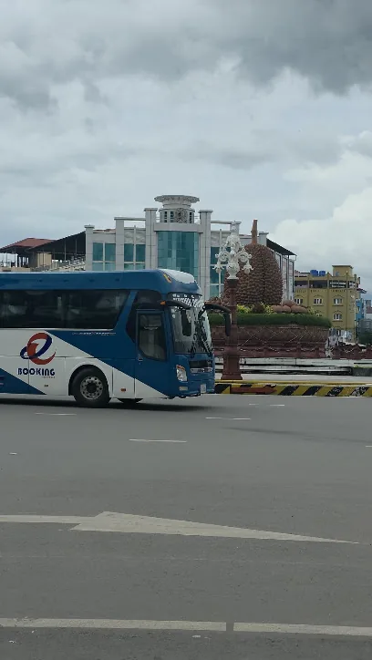
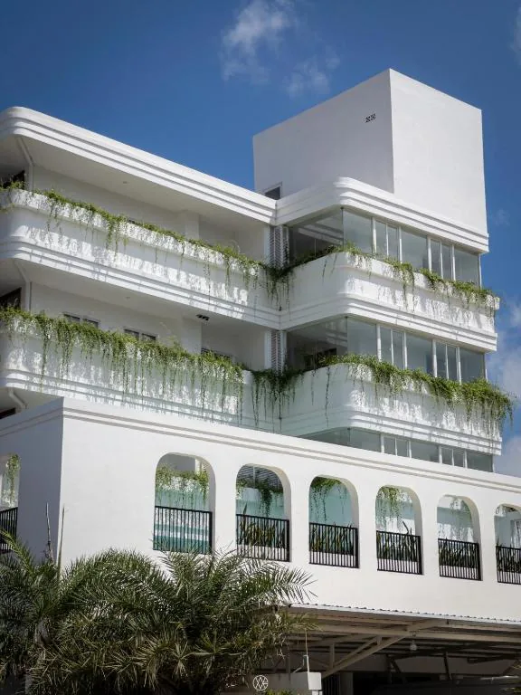
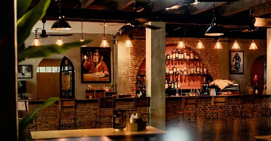

Day 1
Arrive late
17 Jul / 7:00 PM-11:30 PM

7:00 PM
E-booking bus to Kampot
Leave Phnom Penh by bus, arrive in Kampot around 10:00 PM, then continue to Montagne Boutique for check-in.
Phnom Penh to Kampot: ~150 km | ~3-3.5 hrs | 7:00 PM-10:00 PM

10:00 PM
Montagne Boutique
Arrive, check into the Mountain View Twin Room, drop bags, and get ready for a simple night out.
From Kampot bus arrival area to Montagne Boutique: ~3-5 km | ~10-15 min

10:45 PM
Monkey Republic or late food
Go for night food or a relaxed bar stop. If you are tired, rest for the big ride.
From Montagne Boutique: ~3-4 km | ~10-15 min